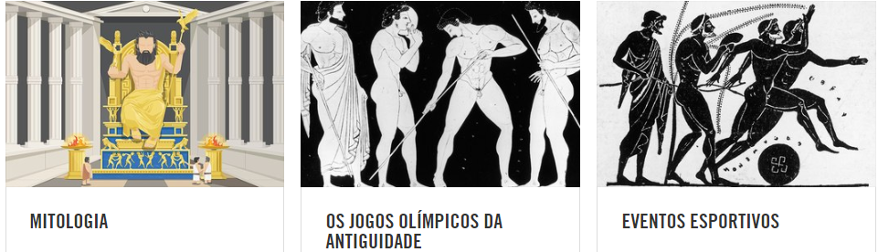

Cheios de sangue, paixão e feitos extraordinários no esforço atlético, os Jogos Olímpicos foram o destaque esportivo, social e cultural do calendário da Grécia Antiga por quase 12 séculos. "É difícil para nós exagerar a importância das Olimpíadas para os gregos", disse Paul Christesen, professor de história da Grécia antiga no Dartmouth College, EUA. “O exemplo clássico é que, quando os persas invadiram a Grécia, no verão de 480 (aC), muitas cidades gregas concordaram em montar um exército aliado, mas tiveram muita dificuldade em reuni-lo porque muitas pessoas queriam para ir para as Olimpíadas. Então, eles realmente tiveram que adiar a criação do exército para defender o país contra os persas. ” Com ameaça de invasão ou não, os Jogos aconteciam a cada quatro anos, de 776BC a pelo menos 393AD. Todos os homens gregos livres foram autorizados a participar, de lavradores a herdeiros reais, embora a maioria dos atletas olímpicos fossem soldados. As mulheres não podiam competir ou mesmo participar. Havia, no entanto, uma brecha nessa regra misógina - proprietários de carruagens, não cavaleiros, eram declarados campeões olímpicos e qualquer um podia possuir uma carruagem. Kyniska, filha de um rei espartano, aproveitou-se disso, reivindicando coroas de vitória em 396 aC e 392 aC. No fundo, os Jogos eram um festival religioso e uma boa desculpa para os gregos de toda a bacia do Mediterrâneo se reunirem para um churrasco tumultuado. No dia do meio do festival, um grande número de vacas foi abatido em homenagem a Zeus, rei dos deuses gregos - uma vez que ele recebia um gostinho, o resto era para o povo. Nos primeiros mais de 250 anos, toda a ação ocorreu no santuário de Olympia, situado no noroeste do Peloponeso. Marcado por oliveiras, das quais as grinaldas da vitória foram cortadas, e com um altar para Zeus, era um local extremamente assustador. Os Jogos duraram cinco dias completos no século V aC e viram eventos de corrida, salto e arremesso, além de boxe, luta livre, pankração e corrida de carros. Pelo menos 40.000 espectadores teriam lotado o estádio todos os dias no auge da popularidade dos Jogos, no século II dC, com muitos outros vendendo seus produtos lá fora..
